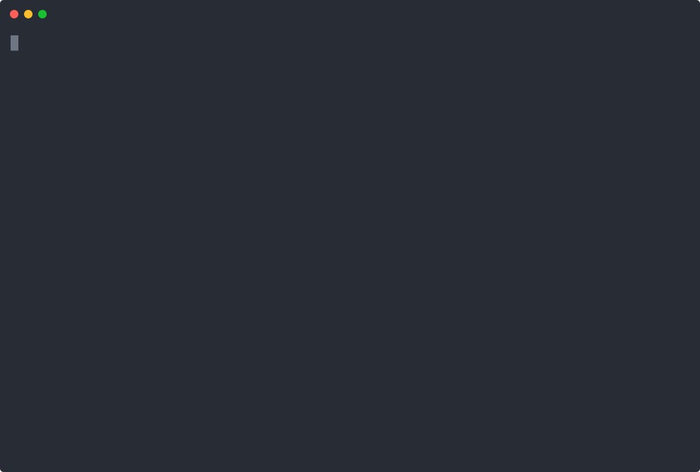

Jump to heading Handling secrets with phabalicious
Jump to heading What is a secret?
A secret is a password, a token, or any other information which should not be publicly visible or available. Secrets must not be stored in a fabfile, or anywhere else, as they are most likely deployed to other systems and might pose a security-risk.
Secrets should be injected on runtime via e.g. environment variables or other mechanisms to reduce the attack surface.
Jump to heading Support for secrets in phabalicious
Phabalicious makes it easy to declare secrets and has various ways to obtain the actual values:
- from environment variables or an .env-file
- via command-line-options
- from 1password (cli/connect)
- as a last resort by asking the user
Jump to heading Example
Jump to heading Step 1: Preparation
Let's start with a very simple fabfile:
name: Secrets in phabalicious
needs:
- script
- local
scripts:
demo:
# An example on how to consume a secret
- echo "host.fooSecret is %host.fooSecret%"
hosts:
local:
fooSecret: bar- Save the file as
fabfile.yaml - Run the command
phab -clocal script demo

Jump to heading Step 2: Declare the secret
Now let's declare the secret, so phabalicious recognizes it:
name: Secrets in phabalicious
needs:
- script
- local
secrets:
foo-secret:
question: What is the secret for foo
scripts:
demo:
# An example on how to consume a secret
- echo "host.fooSecret is %host.fooSecret%"
hosts:
local:
fooSecret: "%secret.foo-secret%"Notice the new secrets-section and the replacement in hosts.local.fooSecret
Let's run the script again and try the different ways on how to pass the secret:
Jump to heading Step 3: Use 1password cli
If you have installed 1password cli you can even simplify this even more. Add the uuid of the 1password-item to the secret declaration:
name: Secrets in phabalicious
needs:
- script
- local
secrets:
foo-secret:
question: What is the secret for foo
onePasswordId: 4g7jjwr7tqfadplpexbb3u4cbm
scripts:
demo:
# An example on how to consume a secret
- echo "host.fooSecret is %host.fooSecret%"
hosts:
local:
fooSecret: "%secret.foo-secret%"Notice secrets.foo-secret.onePasswordId
Let's run the script again:
Jump to heading There's even more
Phabalicious supports also 1Password secrets automation (getting secrets via a REST-API).
For more in-depth information please continue reading in the official documentation